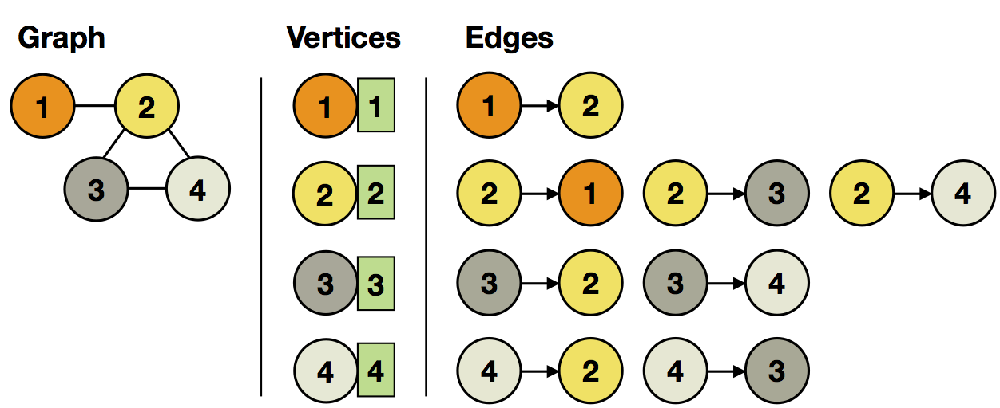
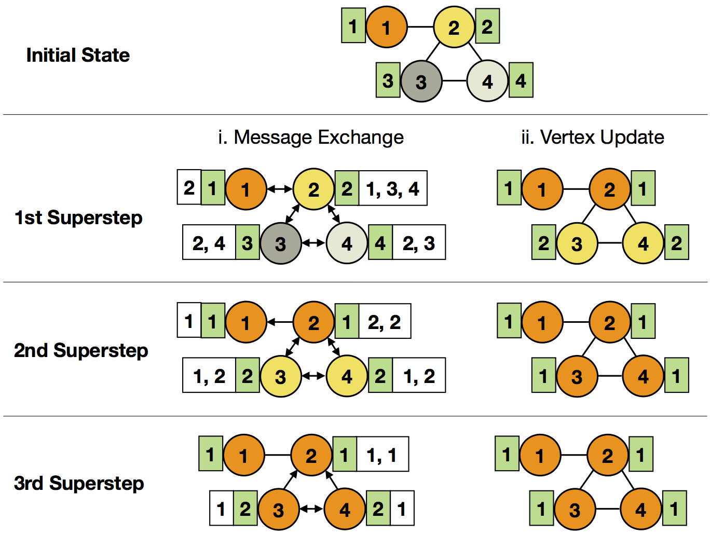

Spargel
Spargel is our Giraph like graph processing Java API. It supports basic graph computations, which are run as a sequence of supersteps. Spargel and Giraph both implement the Bulk Synchronous Parallel (BSP) programming model, propsed by Google's Pregel.
The API provides a vertex-centric view on graph processing with two basic operations per superstep:
- Send messages to other vertices, and
- Receive messages from other vertices and update own vertex state.
This vertex-centric view makes it easy to express a large class of graph problems efficiently. We will list all relevant interfaces of the Spargel API to implement and walk through an example Spargel program.
Spargel API
The Spargel API is part of the addons Maven project. All relevant classes are located in the eu.stratosphere.spargel.java package.
Add the following dependency to your pom.xml to use the Spargel.
<dependency>
<groupId>eu.stratosphere</groupId>
<artifactId>spargel</artifactId>
<version>0.5.1</version>
</dependency>
Extend VertexUpdateFunction<VertexKeyType, VertexValueType, MessageType> to implement your custom vertex update logic.
Extend MessagingFunction<VertexKeyType, VertexValueType, MessageType, EdgeValueType> to implement your custom message logic.
Create a SpargelIteration operator to include Spargel in your data flow.
Example: Propagate Minimum Vertex ID in Graph
The Spargel operator SpargelIteration includes Spargel graph processing into your data flow. As usual, it can be combined with other operators like map, reduce, join, etc.
FileDataSource vertices = new FileDataSource(...);
FileDataSource edges = new FileDataSource(...);
SpargelIteration iteration = new SpargelIteration(new MinMessager(), new MinNeighborUpdater());
iteration.setVertexInput(vertices);
iteration.setEdgesInput(edges);
iteration.setNumberOfIterations(maxIterations);
FileDataSink result = new FileDataSink(...);
result.setInput(iteration.getOutput());
new Plan(result);
Besides the program logic of vertex updates in MinNeighborUpdater and messages in MinMessager, you have to specify the initial vertex and edge input. Every vertex has a key and value. In each superstep, it receives messages from other vertices and updates its state:
- Vertex input: (id: VertexKeyType, value: VertexValueType)
- Edge input: (source: VertexKeyType, target: VertexKeyType[, value: EdgeValueType])
For our example, we set the vertex ID as both id and value (initial minimum) and leave out the edge values as we don't need them:

In order to propagate the minimum vertex ID, we iterate over all received messages (which contain the neighboring IDs) and update our value, if we found a new minimum:
public class MinNeighborUpdater extends VertexUpdateFunction<IntValue, IntValue, IntValue> {
@Override
public void updateVertex(IntValue id, IntValue currentMin, Iterator<IntValue> messages) {
int min = Integer.MAX_VALUE;
// iterate over all received messages
while (messages.hasNext()) {
int next = messages.next().getValue();
min = next < min ? next : min;
}
// update vertex value, if new minimum
if (min < currentMin.getValue()) {
setNewVertexValue(new IntValue(min));
}
}
}
The messages in each superstep consist of the current minimum ID seen by the vertex:
public class MinMessager extends MessagingFunction<IntValue, IntValue, IntValue, NullValue> {
@Override
public void sendMessages(IntValue id, IntValue currentMin) {
// send current minimum to neighbors
sendMessageToAllNeighbors(currentMin);
}
}
The API-provided method sendMessageToAllNeighbors(MessageType) sends the message to all neighboring vertices. It is also possible to address specific vertices with sendMessageTo(VertexKeyType, MessageType).
If the value of a vertex does not change during a superstep, it will not send any messages in the superstep. This allows to do incremental updates to the hot (changing) parts of the graph, while leaving cold (steady) parts untouched.
The computation terminates after a specified maximum number of supersteps -OR- the vertex states stop changing.

Apache Flink is an effort undergoing incubation at The Apache Software Foundation (ASF), sponsored by the Apache Incubator PMC. Incubation is required of all newly accepted projects until a further review indicates that the infrastructure, communications, and decision making process have stabilized in a manner consistent with other successful ASF projects. While incubation status is not necessarily a reflection of the completeness or stability of the code, it does indicate that the project has yet to be fully endorsed by the ASF.